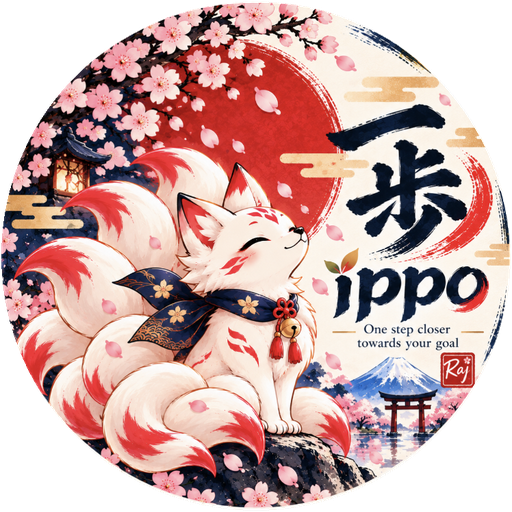
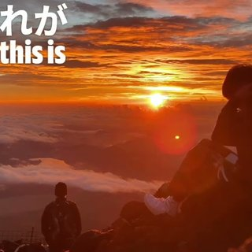

@raj_in_jp
🇮🇳 → 🇯🇵 Self-taught Japanese, N5 → N1 · 180/180 in N3
Languages · vlogs · anime
こんにちは! Whether you're starting hiragana or aiming for N1, I hope something here makes your study a little easier.
Printable PDFs. Free to download, print and share.

On top of Mount Fuji 🗻350+ views ▶ Watch Sparkle (君の名は) lyrics in hiragana & English800+ views ▶ WatchHi, I'm Raj. I share Japanese, languages, vlogs and my journey of learning languages, from JLPT N5 to N1. I speak Tamil, Telugu, Hindi and English, and I'm learning Korean, German, Indonesian and Tagalog.
「言葉を楽しむ」 Enjoy languages.